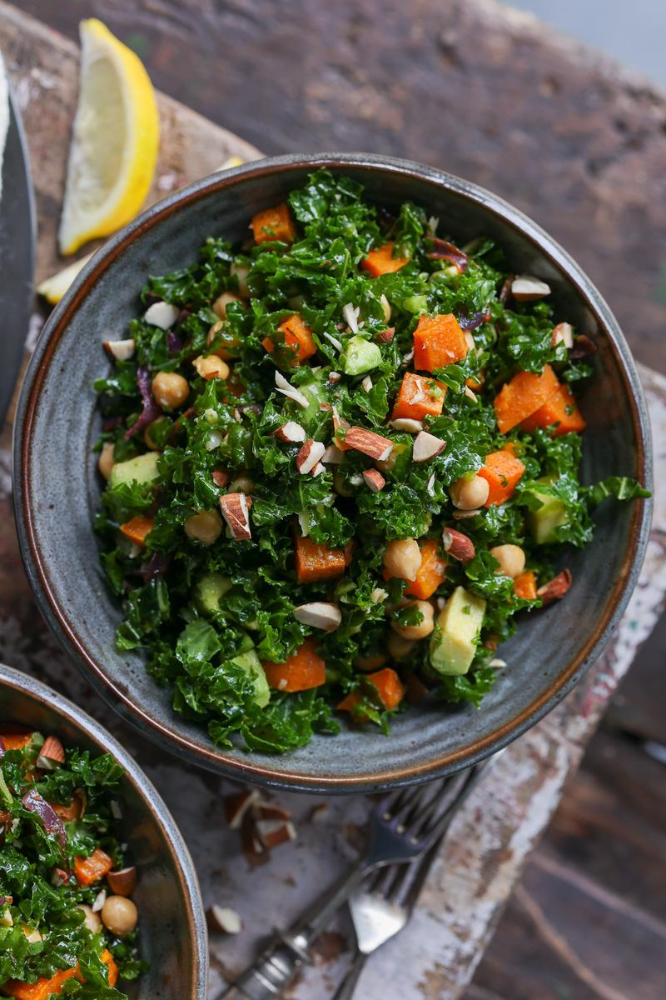

HOME
Roasted Sweet Potato and Kale Salad

from pickuplimes.com
Description
This Roasted sweet potato and kale salad is perfect for your next thanksgiving. Roasted sweet potato, crunchy nuts, creamy avocado make for a satisfying taste. The flavorful dressing ties it all together, scroll down to find out.
Ingredients
Roasted sweet potato
- 3 medium sweet potatoes, cut into 1/2-inch cubes
- 1 medium red onion, sliced
- 4 garlic cloves, peel left on
- 1 tsp (5ml) vegetable oil
- 1 tsp (2g) ground cumin
- 1/2 tsp sweet paprika powder
- 1/4 tsp salt
- 1 pinch ground black pepper
Dressing
- 1 lemon, squeezed
- 6 mint leaves, thinly sliced
- 1 tbsp (15ml) extra-virgin olive oil
- 1 tbsp (15ml) apple cider vinegar
- 1 tbsp (15ml) maple syrup
- 1 tsp onion powder
- 1 tsp salt
Kale salad base
- 1 tbsp (15ml) extra-virgin olive oil
- 4 cups (400g) kale, stem removed, leaves chopped
- 1 & 1/2 cups (245g) cooked chickpeas
- 1 avocado, diced
- 1/4 cup (35g) unsalted roasted almonds
Directions/Steps
- Preheat the oven to 425F/220C. Line a baking sheet with parchment paper.
- Place the roasted sweet potato ingredients on the sheet and toss to coat.
- Bake for about 30 minutes, stirring once halfway, until the potatoes are tender.
- In a medium bowl, combine the dressing ingredients. Peel the roasted garlic cloves, mash them, and mix them into the dressing.
- In a large bowl, drizzle the olive oil over the kale and massage the leaves with your hands for 1 to 2 minutes, until softened.
- Once the potatoes have cooled slightly, add them to the bowl of kale along with the chickpeas, avocado and dressing.
- Toss everything to combine, then top with the roasted almonds. Enjoy!